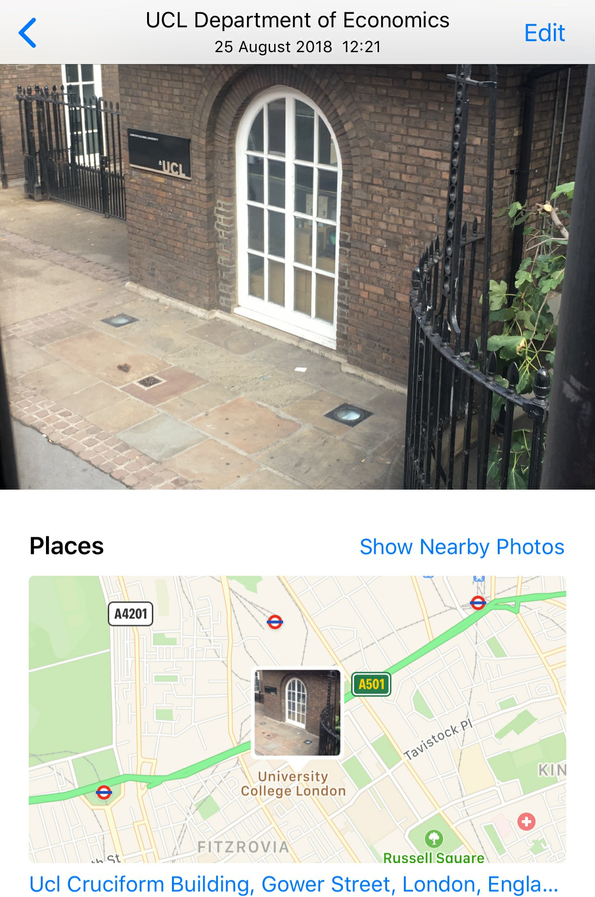
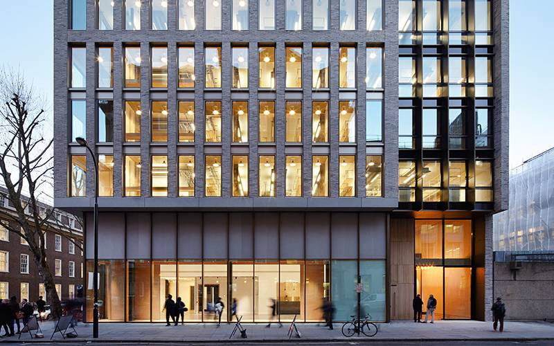

UCL - University of California, London

三年前拍照时大概只知道ucl是个伦敦的学校，那么为什么跑到这呢，因为现在已经偏离当时的目标很远了历史偶然路径依赖。
方圆一公里就拍了这么一张，难以想象恰好是ucl校门。索性绕路几分钟拍下校门对比，差不多一致。拍照的视角有点高，不太符合我的身高，应该是公交视角。

至于把校门识别成经院，地点识别这么离谱，可能是因为校门很破吧，像下图经院的楼一样。

source: https://www.ucl.ac.uk/bartlett/architecture/about-us/visiting-bartlett
Title: 《UCL建筑学院旁边的经院》 你问经院在哪？
说了多少遍了要审题，当然是在建筑学院旁边，图中左下角